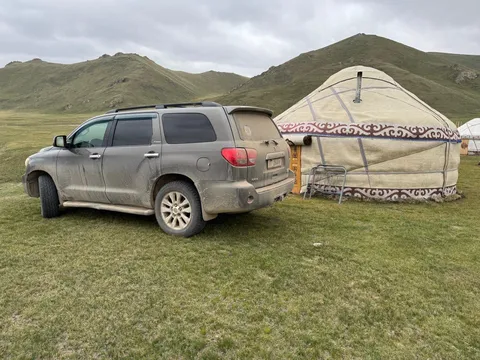

Но в Кыргызстане есть дороги, на которые на неподготовленной машине лучше не соваться. Нужно либо иметь монстра на лифте и 37 колесах и со шноркелем, либо хотя бы ехать тремя машинами с лебедками и страховать друг друга. Именно из-за этого мы в итоге пропустили самую красивую, но и самую сложную дорогу - Тосор-Нарын, которой даже на большинстве карт нет. Формально она проездная - раз в неделю какие-то экстремалы ее преодолевают, но в одну машину, притом стоковую, я не рискнул - там высок шанс просто списать машину, например, утопив в броде.
Был у меня разный опыт - пару лет назал я в хвост и гриву экспуатировал сотый крузак в горах Дагестана. С ним, конечно, было повеселее - на перевалах он закипал, под уклоном из него подтекал бенз, иногда вырубало кондей, а на одном из грейдеров у меня вылетела шпилька, фиксирующая скобу тормозного суппорта, и ее загнуло об колесный диск (пришлось ее на булыжнике выстукивать увесистым домкратом и заколачивать обратно в суппорт, чтобы колодки не выпали). Да и ночевать в пустыне в багажнике джипа тоже доводилось, когда он застрял. Об этом, кстати, я рассказывал в подкасте, ссылка на который есть выше, в сообщении от 22 июня.
Поэтому в этот раз мы ехали с двумя чемоданами. В одном была одежда, обувь, прочие вещи, а во втором - джентльменский набор, включающий набор инструментов на 60 предметов, рывковую стропу, ручную рычажную лебедку, фонарик, стяжки, wd40, армированный серебристый скотч, лопату, надувной матрас, а также набор выживальщика на 20 предметов с огнивом, сверхгромким свистком для отпугивания диких животных и цепной пилой. Не то, чтобы это был необходимый запас для поездки, но опыт прежних приключений подсказывал, что если что-то из этого не взять - оно точно пригодится. Но раз я все это взял, поездка прошла без особых проблем.
Однако, на озере Кель-Суу даже Секвойя спасовала бы, поэтому мы пару десятков километров преодолели на лошадях. Я до поездки надеялся, что у них там есть подготовленные УАЗики для заброски, и даже обсуждал выбор между лошадями и УАЗиком. Встреченный аргумент "да ну, УАЗик трясется и воняет" на поверку оказался несостоятельным - оказывается, лошадям эти проблемы свойственны как минимум в той же степени. Только лошади оказались еще и не самым быстрым транспортом, в добавок лишенным крыши и печки (sic!). В общем, верховая езда - не мое, а лошидиные силы я предпочитаю в исполнении ДВС. Как говорится, "больше, нафиг, никогда".
В итоге, мы за неделю проехали 2200км, из которых лишь примерно половину - по асфальту. Ёлка показала себя превосходно, но тут никто и не сомневался - это же божественная Тойота. А мораль такова - я на 100% уверен, что современные машины, особенно, прости господи, китайские, не выдержали бы одной лишь нашей поездки, они бы просто развалились на части, а ёлку, у которой в этом прокате мы явно не первые, по итогу надо было просто помыть и чуть перетряхнуть сайлентблоки. Японцы делают вещи!
